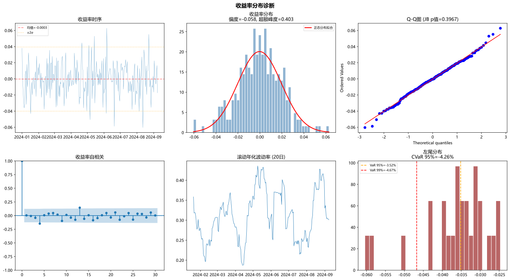
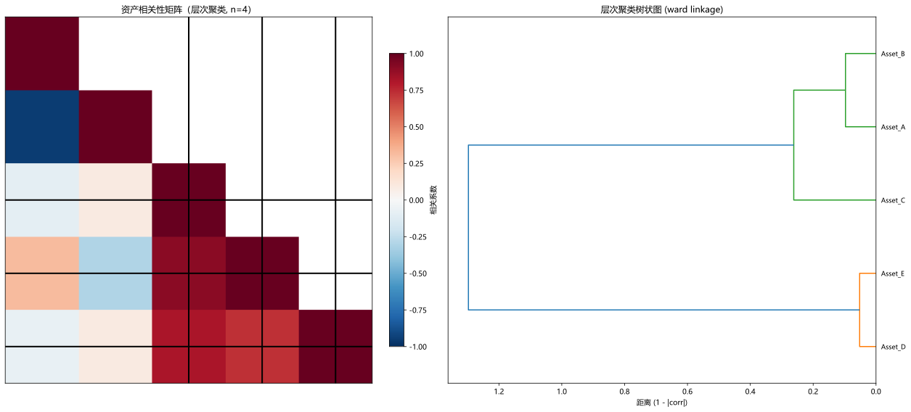
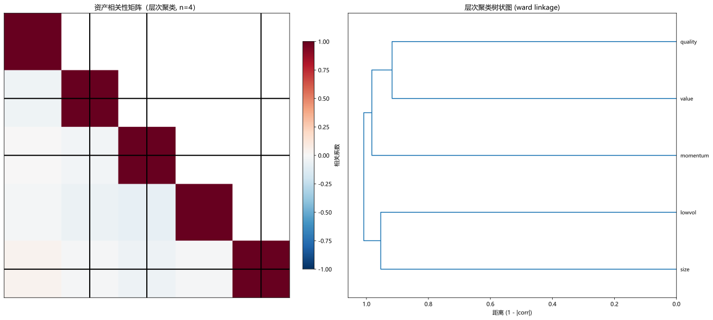

主题切换
2.3 概率统计与相关性
概念详解
概率思维与随机性
金融市场的本质特征是不确定性。相对于工程问题（给定输入，输出基本确定），金融问题是典型的随机系统——即使你拥有完美的信息，也无法精确预测明天的股价。这种不确定性不是暂时的技术限制，而是市场的本质特征：如果有任何可预测的规律，它会被立即交易掉。
因此，量化交易者必须建立扎实的概率统计基础。不是"预测"市场，而是在不确定性中寻找概率优势。
名词解释：肥尾分布
与正态分布相比，尾部更厚的分布，意味着极端事件发生概率更高。金融收益率常呈现此特征。
名词解释：峰度 (Kurtosis)
衡量分布"尾部厚度"的统计量。正态分布的峰度为3，大于3为"尖峰厚尾"（Leptokurtic），意味着极端值出现的概率高于正态分布的预测。
名词解释：偏度 (Skewness)
衡量分布不对称性的统计量。正偏表示右侧尾部更长（如彩票），负偏表示左侧尾部更长（如崩盘风险）。金融收益率常呈现负偏。
为什么正态分布假设在金融中很危险
经典金融理论（如CAPM、Black-Scholes）大量依赖正态分布假设。但实际数据显示：
- 日收益率的峰度通常在5-10之间（远高于正态的3）
- 1987年黑色星期一（标普下跌20%+），在正态假设下应该是"宇宙年龄尺度才发生一次"的事件
- 收益率方差不是恒定的，而是呈现波动率聚集（volatility clustering）
名词解释：波动率聚集
金融时间序列中，大波动之后往往跟随大波动（无论方向），小波动之后往往跟随小波动。这种现象使收益率并非独立同分布，而是具有"自回归条件异方差"（ARCH效应）。
数学原理
关键概率分布
量化交易中最常用的分布：
| 分布 | PDF / 特征 | 金融应用 |
|---|---|---|
| 正态分布 | 对称钟形，由均值和方差决定 | 理论基准（虽然不完美） |
| 对数正态 | 右偏，价格非负 | 股票价格模型 |
| t分布 | 尾部比正态厚，自由度控制厚度 | 收益率建模、稳健回归 |
| 拉普拉斯分布 | 尖峰厚尾 | 高频收益率 |
| 帕累托分布 | 极厚尾部，幂律衰减 | 极端损失建模 |
相关系数及其陷阱
皮尔逊相关系数衡量线性相关程度：
\rho_{X,Y} = \frac{\text{Cov}(X, Y)}{\sigma_X \sigma_Y} = \frac{E[(X - \mu_X)(Y - \mu_Y)]}{\sigma_X \sigma_Y}
相关性分析中需要特别注意：
- 相关性不等于因果关系：X和Y高度相关可能是因为(a)X导致Y，(b)Y导致X，(c)Z同时导致X和Y（混淆变量），(d)纯属偶然
- 相关性不稳定：金融资产间的相关关系随时间剧烈变化，在危机期间相关性往往陡升（diversification fails when you need it most）
- 线性假设局限：皮尔逊相关系数仅衡量线性关系，X=sin(Y)的相关系数可能接近0但二者存在强烈的确定性关系
- 异常值敏感：一个极端值可以严重扭曲皮尔逊相关系数的估计
期望值与条件期望
对于离散和连续情况：
E[X] = \begin{cases} \sum x_i \cdot p(x_i) & \text{离散} \\ \int_{-\infty}^{\infty} x \cdot f(x) dx & \text{连续} \end{cases}
条件期望（Conditional Expectation）是量化信号的核心工具——我们想知道给定某些特征的条件下，资产的预期收益：
E[R_{t+1} | X_t = x] = \int r \cdot f(r | X_t = x) dr
交互式探索
期望值计算器
🎲 期望值计算器
期望值 = 14.50 美元/笔。✅ 正期望策略
随机游走模拟器
📉 随机游走模拟器
资产相关性热力图
🔥 资产相关性热力图
Python实战
案例1：收益分布的统计诊断
此处有展示代码展开 ▼
python
import numpy as np
import pandas as pd
import matplotlib.pyplot as plt
from scipy import stats
# 注:本案例纯 matplotlib + scipy, 不依赖 seaborn(浏览器沙箱不支持)。
def diagnose_return_distribution(returns, title='收益率分布诊断'):
"""
全面诊断收益分布的统计特征
"""
returns = returns.dropna()
n = len(returns)
# 基础统计量
mean = returns.mean()
std = returns.std()
skew = stats.skew(returns)
kurt = stats.kurtosis(returns) # 超额峰度 (excess kurtosis, normal=0)
jb_stat, jb_p = stats.jarque_bera(returns) # Jarque-Bera正态性检验
# VaR 和 CVaR
var_95 = np.percentile(returns, 5)
var_99 = np.percentile(returns, 1)
cvar_95 = returns[returns <= var_95].mean() # Expected Shortfall
# 创建诊断图表
fig, axes = plt.subplots(2, 3, figsize=(18, 10))
# 1. 收益率时序图
axes[0, 0].plot(returns.index, returns.values, linewidth=0.5, alpha=0.7)
axes[0, 0].axhline(y=mean, color='red', linestyle='--', alpha=0.5, label=f'均值={mean:.4f}')
axes[0, 0].axhline(y=mean + 2*std, color='orange', linestyle=':', alpha=0.5, label=f'±2σ')
axes[0, 0].axhline(y=mean - 2*std, color='orange', linestyle=':', alpha=0.5)
axes[0, 0].set_title('收益率时序')
axes[0, 0].legend(fontsize=8)
# 2. 直方图 vs 正态分布
axes[0, 1].hist(returns, bins=50, density=True, alpha=0.6, color='steelblue', edgecolor='white')
x_range = np.linspace(returns.min(), returns.max(), 200)
axes[0, 1].plot(x_range, stats.norm.pdf(x_range, mean, std), 'r-', linewidth=2, label='正态分布拟合')
axes[0, 1].set_title(f'收益率分布\n偏度={skew:.3f}, 超额峰度={kurt:.3f}')
axes[0, 1].legend(fontsize=8)
# 3. Q-Q图 (Quantile-Quantile Plot)
stats.probplot(returns, dist='norm', plot=axes[0, 2])
axes[0, 2].set_title(f'Q-Q图 (JB p值={jb_p:.4f})')
# 4. 自相关图
from statsmodels.graphics.tsaplots import plot_acf
plot_acf(returns, ax=axes[1, 0], lags=30)
axes[1, 0].set_title('收益率自相关')
# 5. 滚动波动率
rolling_vol = returns.rolling(20).std() * np.sqrt(252)
axes[1, 1].plot(rolling_vol.index, rolling_vol.values, linewidth=0.8)
axes[1, 1].set_title('滚动年化波动率 (20日)')
# 6. 左尾放大（关注极端亏损）
left_tail = returns[returns < returns.quantile(0.10)]
axes[1, 2].hist(left_tail, bins=30, density=True, alpha=0.6, color='darkred', edgecolor='white')
axes[1, 2].axvline(x=var_95, color='orange', linestyle='--', label=f'VaR 95%={var_95:.2%}')
axes[1, 2].axvline(x=var_99, color='red', linestyle='--', label=f'VaR 99%={var_99:.2%}')
axes[1, 2].set_title(f'左尾分布\nCVaR 95%={cvar_95:.2%}')
axes[1, 2].legend(fontsize=8)
plt.suptitle(title, fontsize=14, fontweight='bold')
plt.tight_layout()
plt.show()
# 打印统计报告
print("=" * 50)
print(f"样本量: {n}")
print(f"均值: {mean:.6f} (年化: {mean*252:.2%})")
print(f"标准差: {std:.6f} (年化: {std*np.sqrt(252):.2%})")
print(f"偏度: {skew:.4f} {'(显著负偏⚠️)' if skew < -0.5 else ''}")
print(f"超额峰度: {kurt:.4f} {'(厚尾⚠️)' if kurt > 1 else ''}")
print(f"Jarque-Bera p值: {jb_p:.6f} {'(拒绝正态分布)' if jb_p < 0.05 else '(无法拒绝正态分布)'}")
print(f"VaR (95%): {var_95:.4%}")
print(f"VaR (99%): {var_99:.4%}")
print(f"CVaR (95%): {cvar_95:.4%}")
return {
'mean': mean, 'std': std, 'skew': skew, 'kurt': kurt,
'jb_pvalue': jb_p, 'var_95': var_95, 'var_99': var_99, 'cvar_95': cvar_95
}
# 一键运行(用 demo 数据 df['returns'] 作为收益率序列)
diagnose_return_distribution(df['returns'].rename('returns'))点击展开可浏览运行结果
================================================== 样本量: 252 均值: -0.000298 (年化: -7.51%) 标准差: 0.019889 (年化: 31.57%) 偏度: -0.0581 超额峰度: 0.4032 Jarque-Bera p值: 0.396704 (无法拒绝正态分布) VaR (95%): -3.5156% VaR (99%): -4.6745% CVaR (95%): -4.2589%

案例2：相关性矩阵与层次聚类
此处有展示代码展开 ▼
python
import numpy as np
import pandas as pd
import matplotlib.pyplot as plt
from scipy.cluster.hierarchy import linkage, dendrogram, fcluster
from scipy.spatial.distance import squareform
# 注:本案例纯 matplotlib + scipy, 不依赖 seaborn(浏览器沙箱不支持)。
def correlation_clustering(returns_df, method='ward', n_clusters=4):
"""
基于相关性的层次聚类，识别资产群组
returns_df: 每列是一只资产的收益率序列
"""
# 计算相关系数矩阵
corr_matrix = returns_df.corr()
# 将相关系数转换为距离（1 - |corr| 或直接 1 - corr）
# 注意：负相关也可以用于对冲到同一群组中
distance_matrix = 1 - corr_matrix.abs() # 负相关也视为相关
# distance_matrix = 1 - corr_matrix # 如果只想聚类正相关的资产
# 层次聚类
condensed_dist = squareform(distance_matrix.values)
linkage_matrix = linkage(condensed_dist, method=method)
# 生成聚类标签
cluster_labels = fcluster(linkage_matrix, n_clusters, criterion='maxclust')
# 按聚类排序
sorted_idx = np.argsort(cluster_labels)
sorted_corr = corr_matrix.iloc[sorted_idx, sorted_idx]
sorted_labels = cluster_labels[sorted_idx]
# 可视化
fig, axes = plt.subplots(1, 2, figsize=(18, 8))
# 左：聚类后的相关性热力图(纯 matplotlib, 无需 seaborn)
ax_left = axes[0]
mask = np.triu(np.ones_like(sorted_corr, dtype=bool), k=1)
arr = sorted_corr.values
masked_arr = np.where(mask, np.nan, arr)
im = ax_left.imshow(masked_arr, cmap='RdBu_r', vmin=-1, vmax=1,
aspect='equal', interpolation='nearest')
cbar = plt.colorbar(im, ax=ax_left, shrink=0.8, fraction=0.046, pad=0.04)
cbar.set_label('相关系数')
ax_left.set_xticks([])
ax_left.set_yticks([])
# 添加聚类分隔线
boundaries = np.where(np.diff(sorted_labels))[0]
for b in boundaries:
axes[0].axhline(y=b+1, color='black', linewidth=2)
axes[0].axvline(x=b+1, color='black', linewidth=2)
axes[0].set_title(f'资产相关性矩阵（层次聚类, n={n_clusters}）')
# 右：树状图
dendro = dendrogram(linkage_matrix, labels=returns_df.columns.tolist(),
ax=axes[1], orientation='left',
leaf_font_size=9)
axes[1].set_title(f'层次聚类树状图 ({method} linkage)')
axes[1].set_xlabel('距离 (1 - |corr|)')
plt.tight_layout()
plt.show()
# 输出每个聚类的成员
print("=== 聚类结果 ===")
for c in range(1, n_clusters + 1):
members = returns_df.columns[cluster_labels == c].tolist()
print(f"聚类 {c} ({len(members)}个资产): {members[:5]}{'...' if len(members) > 5 else ''}")
return {
'corr_matrix': corr_matrix,
'cluster_labels': cluster_labels,
'linkage_matrix': linkage_matrix,
'distance_matrix': distance_matrix
}
# 一键运行(用 4 个因子 + df['returns'] 构造 5 列资产收益矩阵)
_np.random.seed(7)
_aligned_factors = factors.iloc[:len(df)] # 因子行数与 df 对齐
_demo_returns = pd.DataFrame({
'Asset_A': df['returns'].values + _np.random.normal(0, 0.001, len(df)),
'Asset_B': 0.7 * df['returns'].values + 0.3 * _aligned_factors['momentum'].values + _np.random.normal(0, 0.002, len(df)),
'Asset_C': 0.6 * df['returns'].values + 0.4 * _aligned_factors['value'].values + _np.random.normal(0, 0.002, len(df)),
'Asset_D': _aligned_factors['momentum'].values + _np.random.normal(0, 0.003, len(df)),
'Asset_E': -0.5 * _aligned_factors['momentum'].values + _np.random.normal(0, 0.003, len(df)), # 与 D 负相关
}, index=df.index).iloc[1:] # 去掉首个 NaN
results = correlation_clustering(_demo_returns, n_clusters=4)
print()
print(f"✅ 已识别 {results['cluster_labels'].max()} 个聚类群组")点击展开可浏览运行结果
=== 聚类结果 === 聚类 1 (2个资产): ['Asset_D', 'Asset_E'] 聚类 2 (1个资产): ['Asset_A'] 聚类 3 (1个资产): ['Asset_B'] 聚类 4 (1个资产): ['Asset_C'] ✅ 已识别 4 个聚类群组


常见误区
误区一：相关系数为0就是不相关
事实：皮尔逊相关系数为0只意味着没有线性关系。两个变量之间可能存在完美的非线性关系（如圆形、正弦关系）而相关系数为0。在进行相关性分析之前，一定要先做散点图。
误区二：历史相关性可以外推
事实：金融相关性是高度不稳定的。2008年金融危机期间，几乎所有资产的相关性都飙升（"diversification failed"）。在构建投资组合时，必须考虑相关性在压力情景下的变化——这就是"压力测试"的意义。
误区三：正态分布是合理的近似
事实：对于日常决策可能够用，但对于风险管理可能是致命的。金融数据存在明确的肥尾特征。使用t分布或广义误差分布（GED）往往更安全，至少需要意识到正态假设的风险低估。
误区四：统计不显著=策略无效
事实：统计不显著可能有多种原因：(a) 样本量不够，(b) 信号确实不存在，(c) 信号存在但被噪声掩盖。正确的做法是计算统计功效（Power）——如果策略有经济意义上的合理效应大小，但统计检验的功效不足，则需要更大的样本量，而非直接放弃。
实战练习
分布拟合：取A股某只股票近5年的日收益率，分别用正态分布、t分布和拉普拉斯分布拟合。使用AIC/BIC选择最优分布，并用Kolmogorov-Smirnov检验评估拟合优度。
相关性衰减分析：选取5-8只不同行业的A股股票，计算滚动的60日相关性矩阵。绘制平均相关系数的时间序列，标注市场大跌日（如2015年股灾、2020年3月疫情冲击），观察相关性在危机期间是否上升。
蒙特卡洛模拟：假设一个策略月收益的期望为1%、标准差为5%，用蒙特卡洛模拟生成1000条36个月的资金曲线。输出(a) 终值的分位数分布，(b) 最大回撤的分布，(c) 至少有5条路径出现投资失败（终值<0.8）的概率。
延伸阅读
- 《All of Statistics》—— Larry Wasserman，统计学的精确导论
- 《Statistical Consequences of Fat Tails》—— Nassim Taleb，肥尾分布的全面剖析
- 《An Introduction to Statistical Learning》—— James et al.，统计学习的经典入门书
- Cont, R. (2001): "Empirical Properties of Asset Returns" —— 金融收益率统计特征的系统总结
- Meucci, A. (2009): "Risk and Asset Allocation" —— 非正态分布下的投资组合构建
本章要点
- 金融收益率具有偏度（通常为负）、超额峰度（肥尾）和波动率聚集三大典型特征
- 正态分布假设在量化建模中方便但危险，尾部风险远高于正态预测
- 相关性不等于因果关系，且金融相关性在时间和情境维度高度不稳定
- 统计显著性不等于经济意义，需结合效应大小和统计功效综合判断
- 蒙特卡洛模拟是理解不确定性的强大工具，也是策略压力测试的基础方法